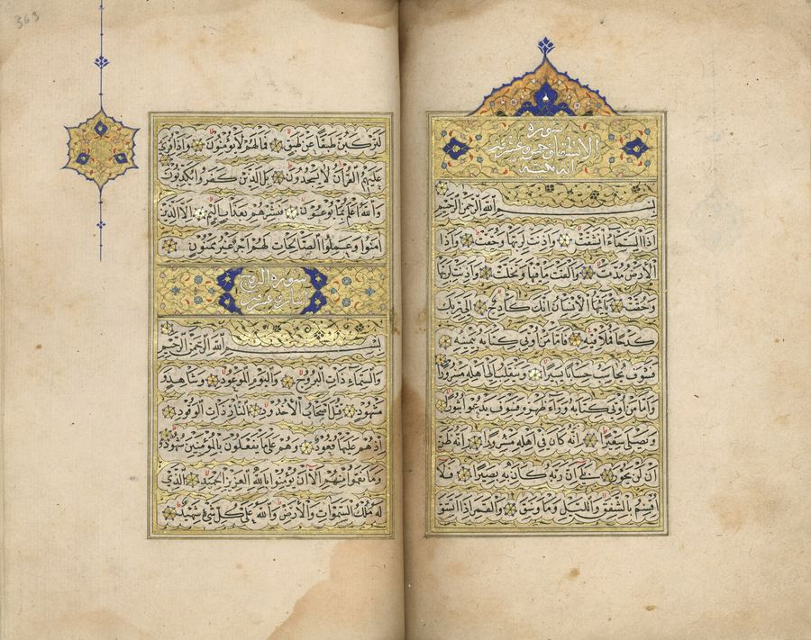

Home / The Mushaf
The Mushaf
The complete Mushaf — 114 surahs and 6,236 ayahs in the Uthmani script. Tap any ayah to hear its recitation, and choose from four reciters.

Here you read and listen to the Muslim's Book… if you want to memorise it and master it with a teacher who hears you and corrects you, your seat with a teacher is at Thiqa Academy.
Book your free trial classNo surah matches your search.
- 1الفاتحةAl-Fatihah
- 2البقرةAl-Baqarah
- 3آل عمرانAli 'Imran
- 4النساءAn-Nisa
- 5المائدةAl-Ma'idah
- 6الأنعامAl-An'am
- 7الأعرافAl-A'raf
- 8الأنفالAl-Anfal
- 9التوبةAt-Tawbah
- 10يونسYunus
- 11هودHud
- 12يوسفYusuf
- 13الرعدAr-Ra'd
- 14ابراهيمIbrahim
- 15الحجرAl-Hijr
- 16النحلAn-Nahl
- 17الإسراءAl-Isra
- 18الكهفAl-Kahf
- 19مريمMaryam
- 20طهTaha
- 21الأنبياءAl-Anbya
- 22الحجAl-Hajj
- 23المؤمنونAl-Mu'minun
- 24النورAn-Nur
- 25الفرقانAl-Furqan
- 26الشعراءAsh-Shu'ara
- 27النملAn-Naml
- 28القصصAl-Qasas
- 29العنكبوتAl-'Ankabut
- 30الرومAr-Rum
- 31لقمانLuqman
- 32السجدةAs-Sajdah
- 33الأحزابAl-Ahzab
- 34سبإSaba
- 35فاطرFatir
- 36يسYa-Sin
- 37الصافاتAs-Saffat
- 38صSad
- 39الزمرAz-Zumar
- 40غافرGhafir
- 41فصلتFussilat
- 42الشورىAsh-Shuraa
- 43الزخرفAz-Zukhruf
- 44الدخانAd-Dukhan
- 45الجاثيةAl-Jathiyah
- 46الأحقافAl-Ahqaf
- 47محمدMuhammad
- 48الفتحAl-Fath
- 49الحجراتAl-Hujurat
- 50قQaf
- 51الذارياتAdh-Dhariyat
- 52الطورAt-Tur
- 53النجمAn-Najm
- 54القمرAl-Qamar
- 55الرحمنAr-Rahman
- 56الواقعةAl-Waqi'ah
- 57الحديدAl-Hadid
- 58المجادلةAl-Mujadila
- 59الحشرAl-Hashr
- 60الممتحنةAl-Mumtahanah
- 61الصفAs-Saf
- 62الجمعةAl-Jumu'ah
- 63المنافقونAl-Munafiqun
- 64التغابنAt-Taghabun
- 65الطلاقAt-Talaq
- 66التحريمAt-Tahrim
- 67الملكAl-Mulk
- 68القلمAl-Qalam
- 69الحاقةAl-Haqqah
- 70المعارجAl-Ma'arij
- 71نوحNuh
- 72الجنAl-Jinn
- 73المزملAl-Muzzammil
- 74المدثرAl-Muddaththir
- 75القيامةAl-Qiyamah
- 76الانسانAl-Insan
- 77المرسلاتAl-Mursalat
- 78النبإAn-Naba
- 79النازعاتAn-Nazi'at
- 80عبس'Abasa
- 81التكويرAt-Takwir
- 82الإنفطارAl-Infitar
- 83المطففينAl-Mutaffifin
- 84الإنشقاقAl-Inshiqaq
- 85البروجAl-Buruj
- 86الطارقAt-Tariq
- 87الأعلىAl-A'la
- 88الغاشيةAl-Ghashiyah
- 89الفجرAl-Fajr
- 90البلدAl-Balad
- 91الشمسAsh-Shams
- 92الليلAl-Layl
- 93الضحىAd-Duhaa
- 94الشرحAsh-Sharh
- 95التينAt-Tin
- 96العلقAl-'Alaq
- 97القدرAl-Qadr
- 98البينةAl-Bayyinah
- 99الزلزلةAz-Zalzalah
- 100العادياتAl-'Adiyat
- 101القارعةAl-Qari'ah
- 102التكاثرAt-Takathur
- 103العصرAl-'Asr
- 104الهمزةAl-Humazah
- 105الفيلAl-Fil
- 106قريشQuraysh
- 107الماعونAl-Ma'un
- 108الكوثرAl-Kawthar
- 109الكافرونAl-Kafirun
- 110النصرAn-Nasr
- 111المسدAl-Masad
- 112الإخلاصAl-Ikhlas
- 113الفلقAl-Falaq
- 114الناسAn-Nas
Quran text: the Uthmani script from the Tanzil project. Recitation: complete human recordings streamed live from the Islamic Network — never downloaded or hosted here. English translation: Saheeh International.